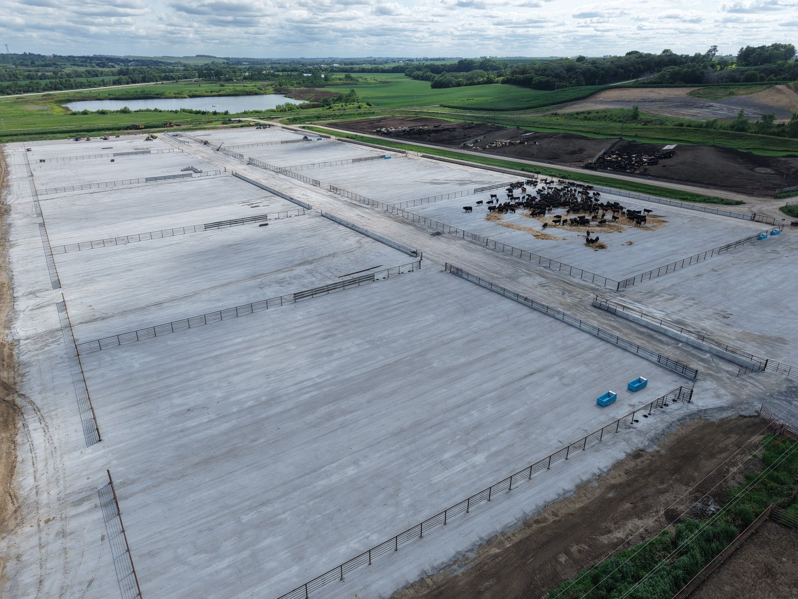

Approximately Double Stocking Rate
Keep the same footprint, but double your capacity.
Purpose-built RCC surfaces for feedlots - full concrete pens, extended aprons, silage pads and operations. Join leading feedlot operators in the RCC innovation.
Plan a Feedlot Project →Feedlots and silage pads face repeated feed truck traffic, heavy loaders, and water. RCC provides a dense, durable surface that can be designed around traffic flow, drainage and daily operations.

Keep the same footprint, but double your capacity.
Keep cattle out of mud and gaining weight during cold, wet weather.
Reduced dust and fewer foot-related issues can contribute to healthier cattle.
A durable RCC surface makes pen maintenance and cleanup more manageable.
Clean and significantly less ash manure can increase its value as a nutrient resource.
Send us the location, approximate square footage and intended use.
Request an Estimate →